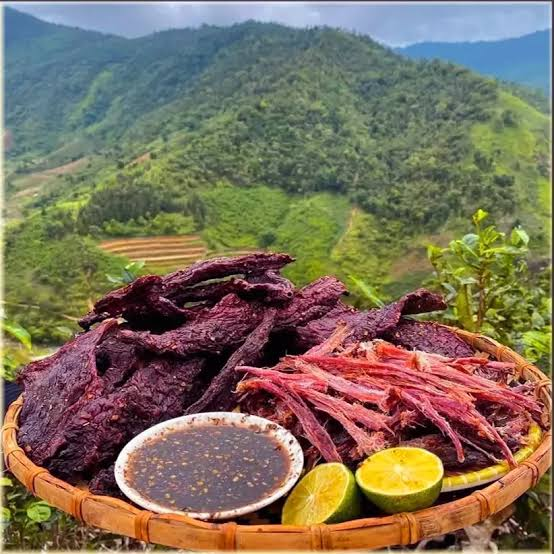
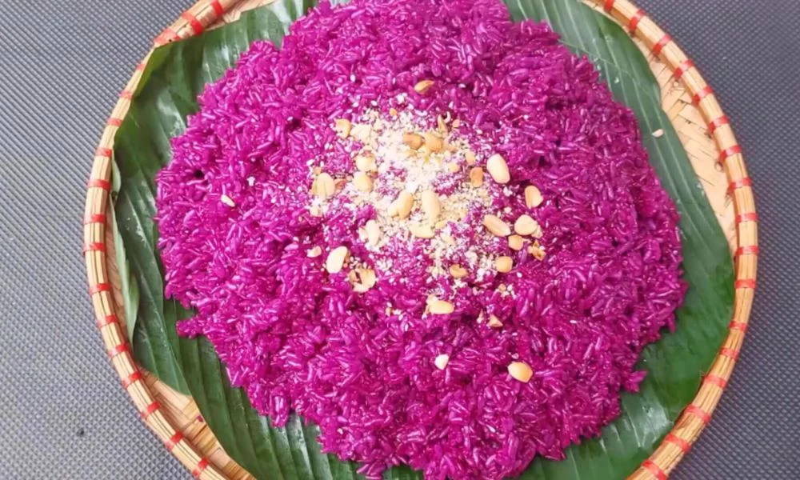
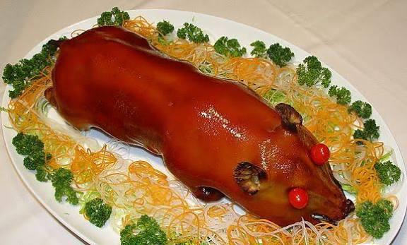

MÓN NGON BẢN ĐỊA
Thịt gác bếp
Thịt được tẩm ướp gia vị địa phương rồi hong trên gác bếp, quyện cùng hương khói và vị cay thơm đặc trưng. Món ăn thường được thưởng thức trong những dịp sum họp, lễ Tết.
Thịt trâu · Thịt lợn · Mắc khénHƯƠNG VỊ NÚI RỪNG
Hương nếp nương, vị mắc khén và bếp lửa ấm nồng — một phần ký ức của miền cao.
Thưởng thức hương vịĐẶC SẢN LAI CHÂU
Ẩm thực Lai Châu đậm đà hương vị núi rừng và tình cảm của người vùng cao.

MÓN NGON BẢN ĐỊA
Thịt được tẩm ướp gia vị địa phương rồi hong trên gác bếp, quyện cùng hương khói và vị cay thơm đặc trưng. Món ăn thường được thưởng thức trong những dịp sum họp, lễ Tết.
Thịt trâu · Thịt lợn · Mắc khén
HƯƠNG VỊ NẾP NƯƠNG
Từ nếp nương dẻo thơm và màu tím tự nhiên của lá rừng, món xôi mộc mạc trở thành điểm nhấn trên mâm cơm của đồng bào các dân tộc Lai Châu.
Nếp nương · Lá rừng · Bản sắc
BỮA CƠM VÙNG CAO
Thịt lợn bản được chế biến cùng các loại gia vị quen thuộc, dậy mùi thơm khi nướng. Một món ăn giản dị nhưng thường để lại dư vị thân tình trong bữa cơm đón khách.
Mắc khén · Hạt dổi · Bếp lửa